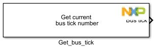
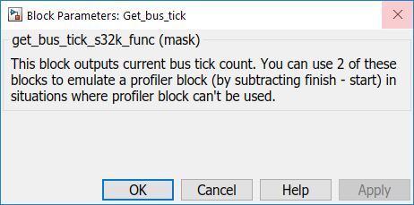

Get Bus Tick Block
This block outputs current bus tick count. You can use 2 of these blocks to emulate a profiler block (by substracting finish - start) in situations where profiler block can't be used.
Block Image
Inputs:
- None
Outputs:
- Current bus tick number
Parameters and Dialog Box
Block Dependency
- None
Block Miscellaneous Details:
- None